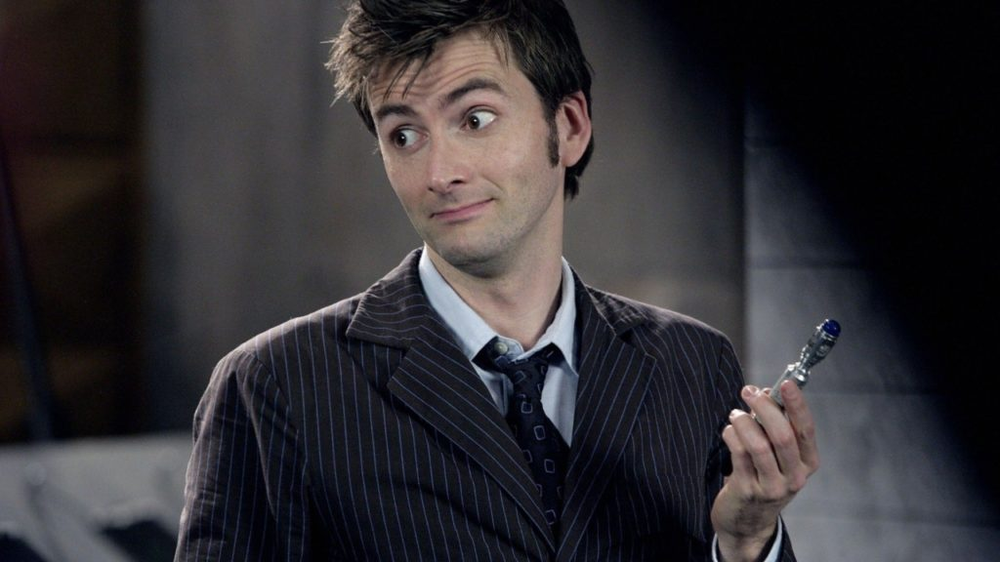
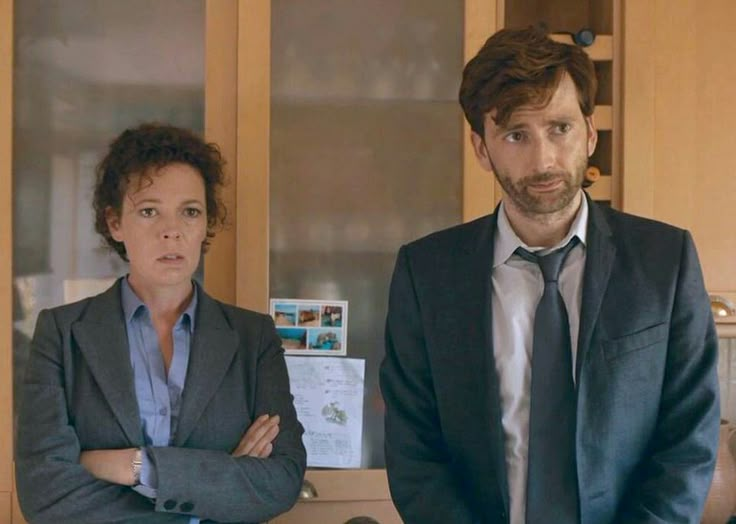
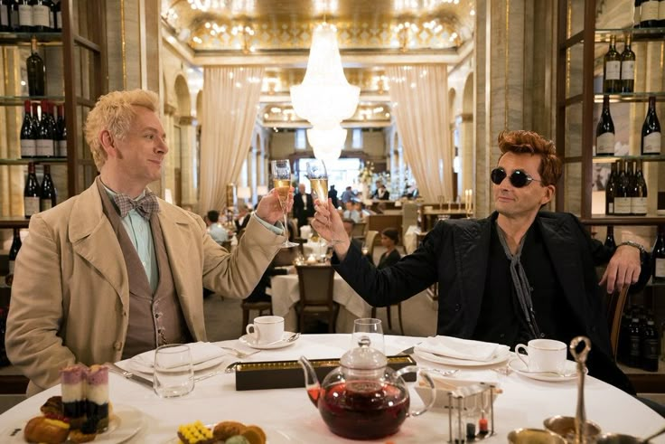
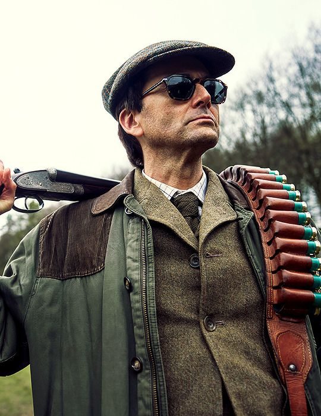

Role: The Tenth & Fourteenth Doctor
Overview: David’s run as the Doctor is iconic. He brought an incredible energy to the quirky, brilliant, and deeply emotional that made an entire generation fall in love with the show and turned him into a global fan favorite.
[Watch on BBC iPlayer / Disney+]

Role: DI Alec Hardy
Overview: A masterclass in drama. David plays Alec Hardy, a grump, overworked detective carrying a heavy past while trying to solve a small-town murder. His brilliant back-and-forth dynamic with Olivia Colman makes this a must-watch.
[Explore on ITVX]

Role: Crowley
Overview: As a demon who drives a vintage Bentley and loves planet Earth a little too much, David shines in every scene. His screen chemistry with Michael Sheen’s Aziraphale is absolute magic to watch.
[Stream on Prime Video]

Role: Lord Tony Baddingham
Overview: Set in the chaotic world of 1980s British television, David plays a ruthless, power-hungry TV executive. It’s fun, sharp, and lets him show off a completely different, deliciously antagonist side.
[Stream on Disney+]